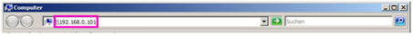
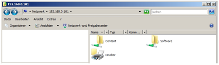

To access the VPU over the Network, make sure your computer is in the same range as the IP address that is assigned to the Ether 1 device in the VPU.
In your computer open a windows explorer window and type the IP address of your VPU as shown below:

A popup will show up and ask you to enter the user and password necessary to access the VPU.
User / Benutzername: “MA”
Password / Kennwort: “12345”
Then you can transfer data to the content or the software folder.

You have access to the complete partition d:\.
The default folder for content is d:\content.
The software folder is used to transfer software updates to the unit via Ethernet connections